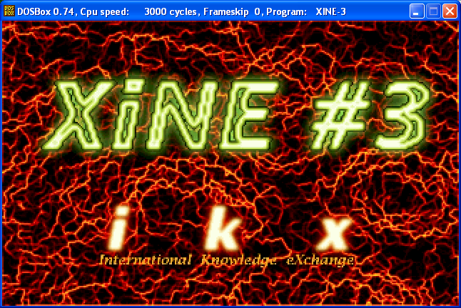
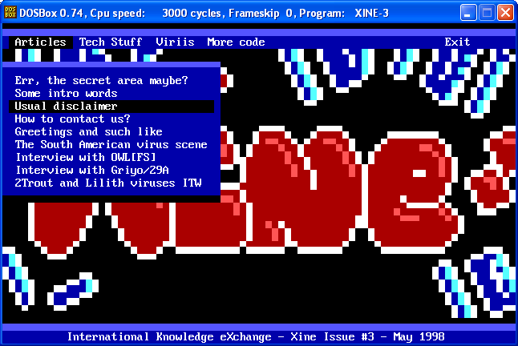

iKx xine #3
Editional
Err, the secret area maybe?
Some intro words
Usual Disclaimer
How to contact us?
Greetings and such like
The South American virus scene
Interview with OWL[FS]
Interview with Griyo/29A
The story of the 2Trout and Lilith viruses ITW
Articles
Win95 structures and secrets
Ideas and theoryes on PE infection
Simple test of the SEH method in Win32
Midinfection on relocations
A new way to defeat virus scanners
Formatting an extra track
Little SYS infection tutorial
Archive Infectors: Generalities
Dropping and companioning over ZIP archives
Dropping over ARJ archives
Dropping over RAR archives
Dropping over HA & ACE archives
Dropping, a view on the past
Introduction to Conway cellular life automata
The Schumrz algorithm of genetical mutation
Using Ptrace to intercept System calls under Linux
pippa, a network datapipe in Perl
Codes
Virus - MarkJ
Virus - Cerebrus
Virus - Padania_Libera
Virus - Murkry2
Virus - Darkside
Virus - Free_Padania
Virus - Kuarahy
Virus - Alicia
Virus - Literatura 2.0
Virus - Stratovarius
Virus - Sandrina
Virus - Sailor_Saturn
Virus - Outsider2
Virus - ByWay
Poly engine - Red Team Polymorphy 0.1b
Virus Spotlite - The Second NewBorn Trout
Virus Spotlite - Lilith
Virus Spotlite - Overkill_IV
Disasm - Grog.2075
Disasm - Grog.2825
Disasm - TME.643
Disasm - TVED 1.0
Mini Conway game of life emulator

